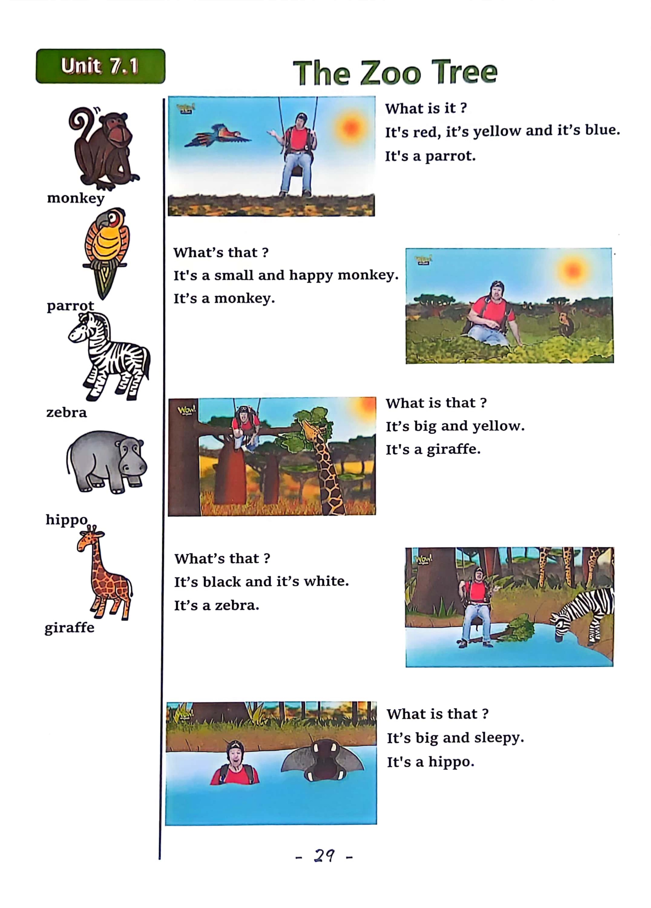

Day 29
Unit 9 · story
教材重点
教材重点依据网盘文件“第四级绿色每日打卡全.pdf”，PDF 第 31 页对应 Day 29；以原图为准，避免对图片文字做不可靠的自动识别。
网盘教材重点原图 · PDF 第 31 页对应 Day 29

Unit 9 · story · 6–7岁
look · hat · come · white
Hello, hello, my name's Steve.
台词本为机器转写，可能存在识别误差；不等同于视频逐字原声。
详细内容
Part 1 核心词汇
必须掌握 · 4 个Part 2 跟读句型与句型拓展
左侧保留台词本原句，右侧为替换练习；拓展内容不是视频逐字台词。
Hello, hello, my name's Steve.
It's time to play. It's time to play in English.
Gloves, scarf.
Wooly hat and wooly socks, what? Oh no.
Joe, oh, hey, hello. Hi.
Part 3 台词本全文
来源：第4级台词本 · 029.Wow!Green - Unit 9 story1.pdf。以下保留网盘 PDF 的机器转写文本，仅清理了文件路径页眉和空行。
Hello, hello, my name's Steve.
It's time to play. It's time to play in English.
Gloves, scarf.
Boots.
Wooly hat and wooly socks, what? Oh no.
Hey, oh,
Joe, oh, hey, hello. Hi.
Look.
It's cold and snowing outside today, so I'm wearing warm clothes like this woolly jumper.
These trousers. And.
Hey, wait a minute, oh, I'm not wearing any socks, a hole, I need warm, woolly socks.
There must be some in my wardrobe, woolly socks, I need a pair of woolly socks.
Where are my woolly socks? HA, HA, HA, hey, look.
I found a woolly sock.
A So what is it Say it with me.
It's a woolly sock, it's a woolly sock, it's a woolly sock. Yeah.
But it's only one woolly sock, and I've got two feet.
Where's that other woolly sock.
No, no, no, no, where's that other woolly sock? Oh, no, no.
Oh, hey, ho, I can't find the other Woolly Sock, but hey.
Who made this mess? Oh,
It was May, wasn't it?
Oh, sorry, let's bring, that's not now, maggie,
I'm looking for my other woolly sarco stay.
It's on you, not now, maggie, I'm looking for my other woolly so silly stay, you see my other woolly sock.
Yes, really.
Where is it under the table?
Is it the other woolly sock? No, it's a woolly hat. Look what is it.
It's a woolly hat, it's a woolly hat, it's a woolly hat.
Hey, I'm going to need a woolly hat.
/
-
/4/029.Wow!Green - Unit 9 story1.txt[2022/3/29
星期二
6:49:32]
Great, hey, look, I'm wearing a woolly hat, oh, what's that over there?
What is it Is it The other Ruly Sock.
No, so what is it Look.
It's a scarf, hay, say it with me, what is it It's a scarf.
It's a scarf.
It's a scarf. Yeah.
I'm going to need a scarf, oh, great, look, I'm wearing a red scarf.
Whole, but where is the other Woolly song Can you see the other woolly socks? Yes,
Where there under the bed. So.
What's under the bed? Well, it's not my other woolly sock, is it No.
Oh, look, they're my white gloves. Look, hey, what are they say with me They are gloves.
They are gloves, they are gloves, yeah, they are white gloves. I'm going to need my white gloves.
Okay, where's that other sock? Okay? I'm wearing white gloves.
But I still can't find my other.
Woolly saw, can you see my other woolly sock? Yes, I can. You can wear.
Where where your shoulder.
I know Maggie, I need two woolly sauce, oh, it's here.
I found my other woolly sock. Thanks Maggie, so what are they.
They are wooly socks, they are wooly socks, they are wooly socks, great.
Time to put on my wooly socks. Okay, hey, look, I'm wearing wooly socks.
I'm wearing a woolly hat.
I'm wearing white gloves, and I'm wearing a red scarf. I'm ready to go and play in the snow.
Come on my head like your legs white. He's not wearing boots.
Oh no, I'm not wearing any boots. Oh three, two, one.
Hello, stage, oh, come come come.
Well, maggie, I'm not wearing boots. Where are my boots there they are? Look, hey.
What are they They are, boots, say it with me, what are they They are boots.
They are boots. They are boots, yeah, they're my black boots. Time to put on my black boots.
Come on, then let's go.
That's better, look.
I'm wearing black boots, yeah, see it next time, bye, bye, bye, bye, come on, maggie, let's play.